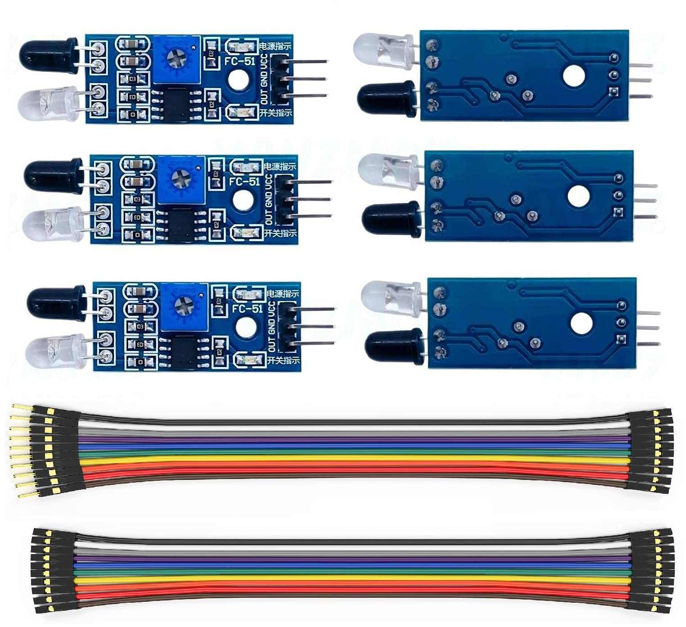

Machine Components

IR Sensor (Infraraed Sensor)
Detects object presence on the conveyot belt to start the system automatically.

Motor & Conveyor
Moves waste automatically along the conveyor belt to the appropriate bins.